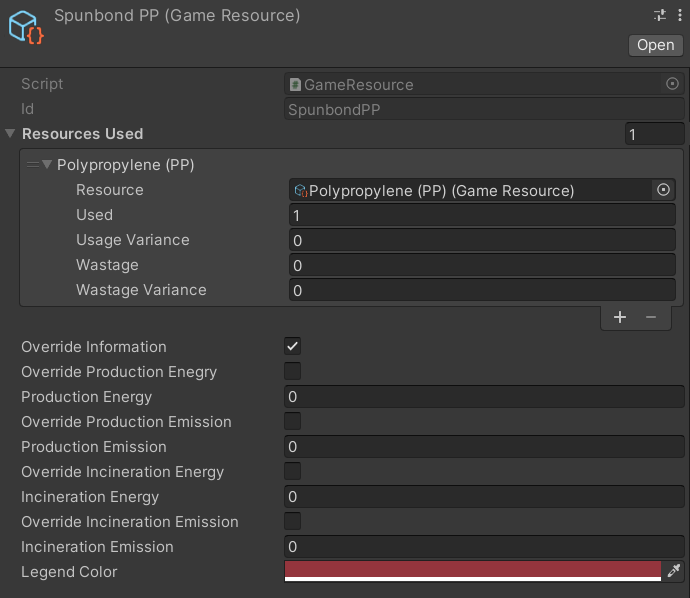

The Game Resource Scriptable Object
The Game Resource scriptable object represents a resource in the in-game world, and can represent both raw materials like cotton and crude oil and refined resources like fabric and gasoline.

Each Game Resource has:
Resources Used- a list of sub-resources used in the production of 1 gram/1 unit of the particular resource. This can be left empty if the resource is a raw material.Override Information- If selected, shows the optionsOverride Production Energy,Override Production Emission,Override Incineration Energy,Override Incineration EmissionOverride Production Energy- Whether to override the calculated production energy fromResources UsedwithProduction EnergyProduction Energy- the energy required to produce 1 unit of the resource from its constituent resources. IfOverride Production Energyis selected, the total energy required to produce 1 unit of the resource from scratch.Override Production Emission- (Unused) Whether to override the calculated production emissions fromResources UsedwithProduction EmissionProduction Emission- (Unused) the emissions produced in the production 1 unit of the resource from its constituent resources. IfOverride Production Emissionis selected, the total emissions created in the production of 1 unit of the resource from scratch.Override Incineration Energy- (Unused) Whether to override the calculated incineration energy fromResources UsedwithIncineration EnergyIncineration Energy- (Unused) the energy released in the incineration 1 unit of the resource.Override Incineration Emission- (Unused) Whether to override the calculated incineration Emission fromResources UsedwithIncineration EmissionIncineration Emission- (Unused) the Emissions released in the incineration 1 unit of the resource.Legend Color- the color used in the game to represent the game resource.